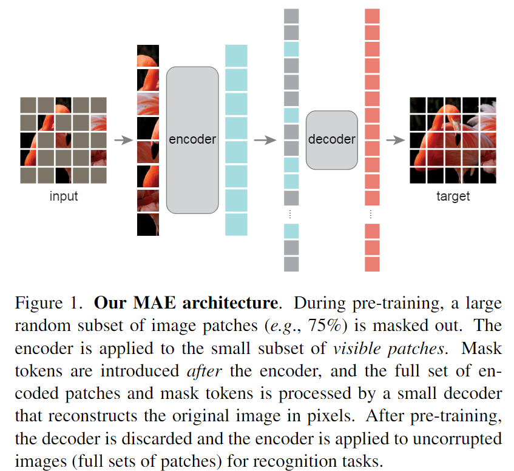
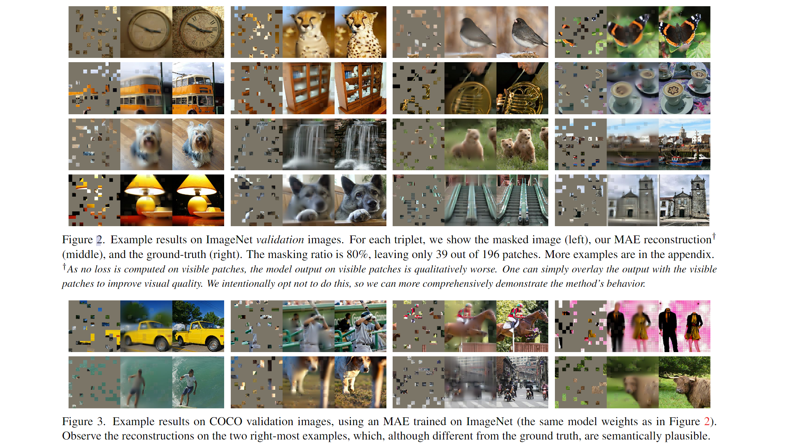
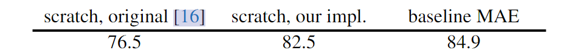
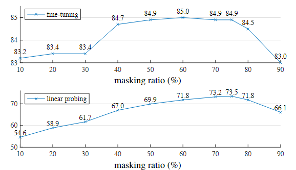
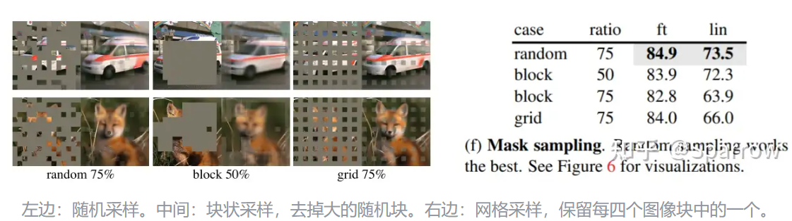
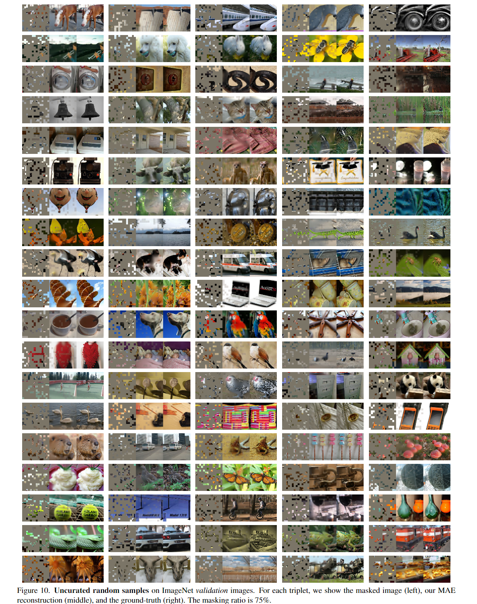

MAE：Masked Autoencoders Are Scalable Vision Learners
相关信息
论文地址：Masked Autoencoders Are Scalable Vision Learners
代码（Pytorch版）:https://github.com/facebookresearch/mae/
资源：
概述
MAE是一种简单、有效且可扩展的 用于视觉表示学习的非对称编码器-解码器体系结构，其中的编码器只对可见的patch子集（没有mask的token）进行操作，同时还有一个轻量级的解码器，该解码器从潜在表示和mask token中重建原始图像。其次，作者发现mask高比例的输入图像patch（例如75%）会变成一个不错且有意义的自监督任务。将这两种设计结合起来，能够高效地训练大型模型：本文的模型加快训练速度（3倍或更多）并提高精度。
我们开发了一个非对称编码器-解码器架构，其中一个编码器只对可见的patches子集进行操作（没有掩码标记），以及一个轻量级解码器，可以从潜在表示和掩码标记重建原始图像。我们发现屏蔽大部分输入图像，例如 75%，会产生重要且有意义的自监督任务。将这两种设计结合起来使我们能够高效地训练大型模型，将训练速度提高 3 倍或更多，并提高准确性。

论文在 ImageNet-1K 训练集上进行了自监督的预训练，然后进行了监督训练，以通过端到端的微调或线性探测来评估表示。他们使用ViT-Large (ViT-L/16)作为他们的模型并验证Top1准确性。
结果表明，MAE 学习了非常高容量的模型，这些模型也能很好地泛化。使用普通的ViT-Huge模型，MAE 在 ImageNet-1K 上进行微调时达到了 87.8% 的准确率。

方法
MAE作为一种自监督学习框架，其核心思想是：给定一个完整的输入图像，随机遮挡一部分patch，然后通过未遮挡的patch来预测被遮挡的patch。并且，模型采用了一种非对称设计，从输入图像中随机mask部分patch，利用解码器在像素空间中重构丢失的patch。编码器仅仅对可见的patch进行计算。解码器是一个轻量化的网络，在解码器中使用mask token与编码器的输出一同重构像素，这样计算量大大减小。
- Masking
对于从patch中选取mask，作者采用了机抽样的方法，在对原本顺序的patch进行shuffle后选取前25%作为可见的patch，其余的75%作为mask。这样高遮盖率的随机采样在很大程度上消除了冗余(redundancy)，因此创建了一个无法通过从可见相邻patch来轻松解决的任务。均匀分布可防止潜在的中心偏移（即图像中心附近有更多遮盖patch）。最后，高度稀疏的输入为设计高效编码器创造了机会。
- MAE Encoder

MAE的编码器采用ViT结构，对可见的patch进行编码，去除了mask patch，且不使用mask token，而mask的部分，会交给更轻量级的decoder来处理。这使我们能够用一小部分的计算和内存来训练非常大的编码器。
- MAE Decoder
MAE的解码器采用一个轻量级的Decoder，主体包含几个transformer blocks，而最后一层是一个linear层，用来直接预测mask patch的像素值，其输出通道数是和一个patch像素数一致，输出经过reshape以后形成重建图像。解码器的输入信息是所有token，由编码器输出的编码向量和mask token组成。每个mask token都是一个共享的、可学习的向量，表示要预测的缺失patch。而后给所有token添加positional embedding
训练的loss采用重建图像和原始图像之间的的均方误差（MSE）：计算预测像素值和原始像素值的均方误差，不过loss只计算mask patch上的损失。
实验
论文使用了ViT-Large（ViT-L/16）作为编码器在ImageNet-1K实验，对比了使用MAE无监督预训练与从头训练后模型，来评估encoder的表征能力。

可知，baseline MAE的方法（经MAE预训练后fine-tune）的模型表现优于从头训练的模型，说明MAE预训练能够提升模型的表征能力。
Masking ratio

作者认为：图像是低信息密度的，其中信息冗余非常大，因此需要较大比例的Mask。根据实验可知，Masking ratio大于50%是较好的，能让模型学习到比较深刻的信息。而对于nlp任务的高信息密度的任务，BERT使用15%的mask比例已经足矣。
即信息密度越大，我们需要mask的比例越少；信息密度越稀疏，我们需要mask的比例越多。
同时，实验也证实了使用随机采样(random masking)的效果较好：

fine-tuning
对于ViT architecture：
我们遵循标准的ViT架构。它有一堆
Transformer块，每个块由一个多头自注意力块和MLP块组成，两者都具有LayerNorm (LN)。编码器以LN结束。由于MAE编码器和解码器的宽度不同，我们在编码器之后采用linear projection layer来匹配它。MAE将positional embeddings（the sine-cosine version）添加到编码器和解码器输入中。我们的 MAE 不使用相对位置或层缩放。我们从编码器输出中提取特征进行Fine-tuning和Linear Probing。由于ViT有一个类标记[CLS]，为了适应这种设计，在我们的MAE预训练中，我们将辅助虚拟标记附加到编码器输入中。该标记将被视为用于在Linear Probing和Fine-tuning中训练分类器的类标记。我们的MAE在没有这个标记（使用average pooling代替）的情况下也同样有效。
- Pre-training
我们不使用
color jittering, drop path, gradient clip。我们使用xavier uniform来初始化所有Transformer块，遵循ViT的官方代码。我们使用线性lr缩放规则 [20]：\(lr = base_lr \times batchsize / 256\)。

- End-to-end fine-tuning
我们的微调遵循
supervised ViT训练的常见做法，默认设置如表所示。我们使用分层lr衰减（layer-wise lr decay）。

- Linear probing
我们观察到
Linear Probing需要与End-to-end fine-tuning非常不同的方案。特别在于，正则化通常对Linear Probing有害。我们禁用了许多常见的正则化策略:我们不使用mixup、cutmix、droppath或color jittering，并且我们设置权值衰减为零。

mask修复效果展示（原文）

代码实现（kaiming）
utils
models_mae.py
1 2 3 4 5 6 7 8 9 10 11 12 13 14 15 16 17 18 19 20 21 22 23 24 25 26 27 28 29 30 31 32 33 34 35 36 37 38 39 40 41 42 43 44 45 46 47 48 49 50 51 52 53 54 55 56 57 58 59 60 61 62 63 64 65 66 67 68 69 70 71 72 73 74 75 76 77 78 79 80 81 82 83 84 85 86 87 88 89 90 91 92 93 94 95 96 97 98 99 100 101 102 103 104 105 106 107 108 109 110 111 112 113 114 115 116 117 118 119 120 121 122 123 124 125 126 127 128 129 130 131 132 133 134 135 136 137 138 139 140 141 142 143 144 145 146 147 148 149 150 151 152 153 154 155 156 157 158 159 160 161 162 163 164 165 166 167 168 169 170 171 172 173 174 175 176 177 178 179 180 181 182 183 184 185 186 187 188 189 190 191 192 193 194 195 196 197 198 199 200 201 202 203 204 205 206 207 208 209 210 211 212 213 214 215 216 217 218 219 220 221 222 223 224 225 226 227 228 229 230 231 232 233 | |